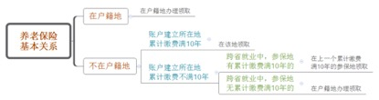

做中国领先的
人力成本优化解决方案+人力资源SAAS软件服务商
致力于用科技推动中国人力资源管理的变革
养老保险是许多老年人生活的保障，老人十分关注自己每个月到底能领取多少养老金。由于工作调动等原因使得养老保险断缴或者需要进行转移的现象也很常见，那么养老金到底该如何正确的领取呢，人社部最新印发的通知明确了城镇企业职工基本养老保险关系转移接续等若干问题，人事人小编帮助您整理如下：
养老金的领取主要有4种情况：
1、养老保险在户籍地的，在当地领取 参保人员待遇领取地按照基本养老保险关系在户籍所在地的，由户籍所在地负责办理待遇领取手续。

2、养老保险不在户籍地的，分3种情况领取：
（1）在累计缴费满10年地区领取 参保人基本养老保险关系不在户籍所在地，而在其基本养老保险关系所在地累计缴费年限满10年的，在该地办理待遇领取手续。
（2）年限不够，转上一缴满年限地领取 基本养老保险关系不在户籍所在地，且在其基本养老保险关系所在地累计缴费年限不满10年的，将其基本养老保险关系转回上一个缴费年限满10年的原参保地办理待遇领取手续。
（3）多地年限均不够，资金归集户籍地 基本养老保险关系不在户籍所在地，且在每个参保地的累计缴费年限均不满10年的，将其基本养老保险关系及相应资金归集到户籍所在地，由户籍所在地按规定办理待遇领取手续。